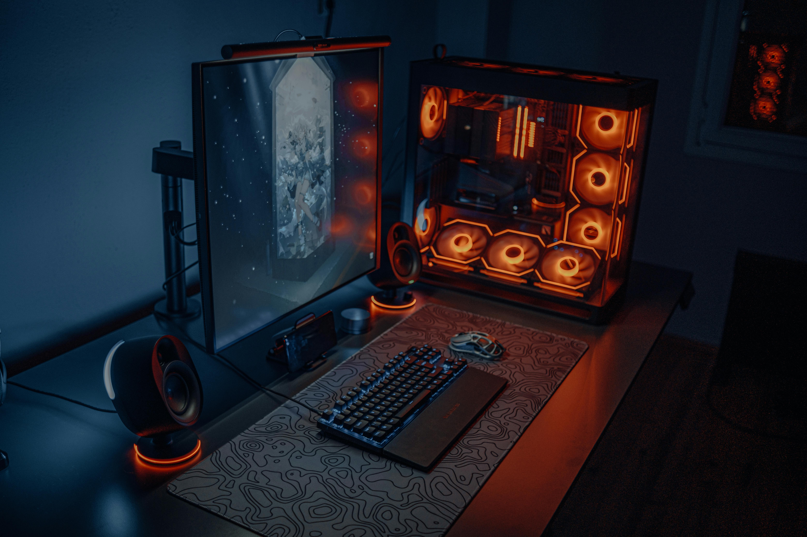

PROYEK TERAKHIR




Saya merupakan lulusan dari fakultas teknik Prodi Pendidikan Teknik Elektronika dari Universitas Negeri Yogyakarta. Memiliki IPK 3,45 senang di bidang teknologi baik dari pembuatan alat elektronika, pengembangan alat elektronika, memperbaiki alat - alat elektronika termasuk komputer dan handphone, dan juga senang di bidang desain grafis dan animasi.
Download CVSaya merupakan seseorang yang senang di bidang teknologi, seperti contohnya komputer, handphone, dan juga mikrokontroller. Saya memiliki kemampuan dalam bidang servis dan perawatan elektronik, kemampuan di bidang pembuatan dan pengembangan alat berbasis mikrokontroller dan juga sensor, kemampuan dalam desain grafis 2D berikut juga animasi, kemampuan dalam pemrograman website dalam front end development, dan kemampuan administrasi kurikulum pembelajaran berdasarkan pengalaman mengajar. Saya seorang yang menyukai tantangan, hal - hal baru, bertanggung jawab, jujur, disiplin waktu, dan bersungguh - sunggu dalam menjalankan sebuah kegiatan atau pekerjaan.
Lihat CV OnlineSaya memiliki pengalaman 2 tahun sebagai pekerja paruh waktu dalam mengajar mata pelajaran Komputer pada salah satu sekolah SMP dan SMA di jakarta. Memiliki jobdesk yaitu mengerjakan administrasi dalam pembelajaran sampai dengan penilaian akhir.
Lihat DokumentasinyaBerawal dari kesenangan dan hobby memperbaiki barang yaitu handphone, laptop dan komputer. Hobby yang berawal dari semenjak SMP dan diimplementasikan sampai sekarang dengan menjadi pekerjaan sampingan untuk dapat memperdalam ilmu tentang servis.
Lihat DokumentasinyaSaya memiliki channel di platform youtube dengan nama channel Lutfi Maulana Virgiansyah. Di channel tersebut berisikan tentang penyaluran hobby saya. Baik dari hobby bermain game, editing video, desain grafis, motion grafis, dan juga saya sedikit belajar SEO untuk konten video.
Lihat Channel Youtube